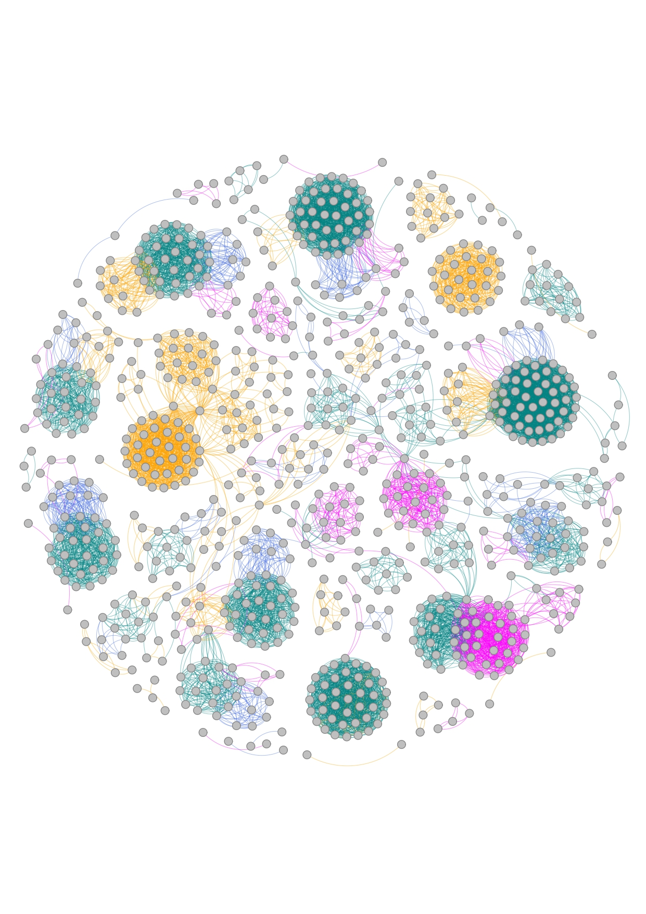
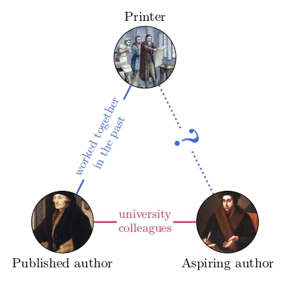
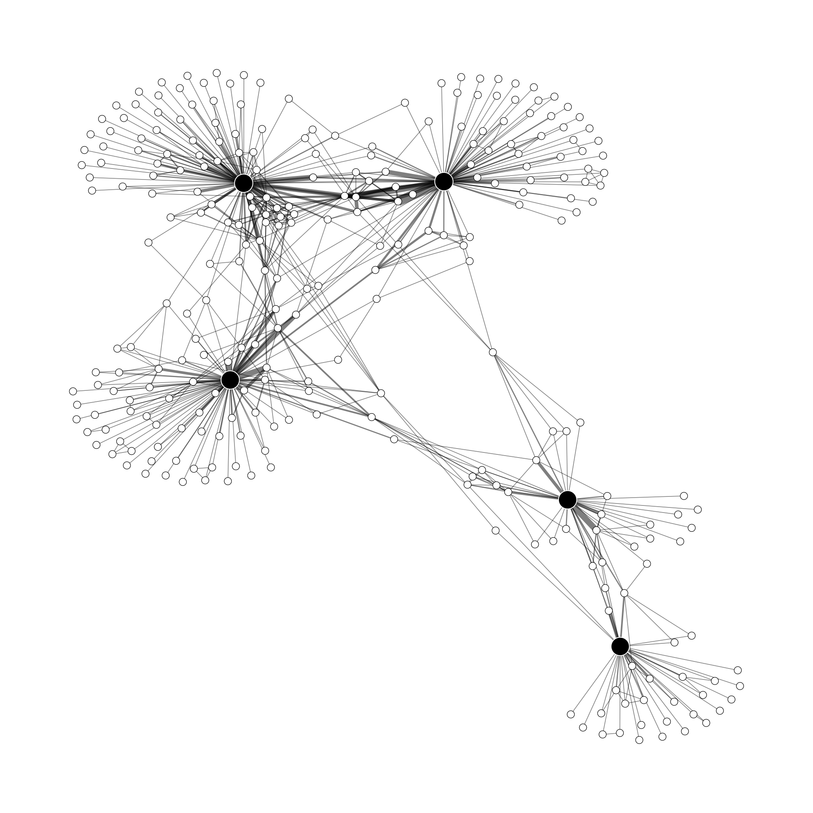
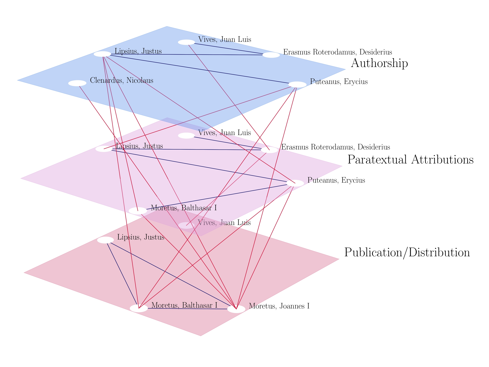

About me
I am an FWO postdoctoral researcher in the Department of Economics at the University of Antwerp. I hold a joint PhD in Economics and History from UCLouvain and KU Leuven.
My research interests are applied economic history, the economics of knowledge and innovation, and the economics of crime. My work combines microeconometric methods with network analysis.
Research
Working papers

Flora, Cosmos, Salvatio: Pre-modern Academic Institutions and the Spread of Ideas
Joint with David de la Croix and Chiara Zanardello
[latest version] [CEPR discussion paper]
Abstract
While good ideas can emerge anywhere, it takes a community to develop and disseminate them. In premodern Europe (1084–1793), there were approximately 200 universities and 150 academies of sciences, which were home to thousands of scholars and created an extensive network of intellectual exchange. By reconstructing interpersonal connections that were made via institutional affiliations, we demonstrate how the European academic landscape facilitated the diffusion of ideas and led cities to develop: examples include botanic gardens, astronomical observatories, and Protestantism. Counterfactual simulations reveal that both universities and academies played crucial roles, with academies being particularly effective at connecting distant parts of the network. Moreover, we show that the diffusion of ideas through the network is remarkably resilient, even if we remove key regions such as France or the British Isles. In Europe, ideas gain prominence when they are channeled effectively by powerful institutions.

Network-Mediated Screening: Evidence from Early Modern Academic Publishing
[work in progress]
Abstract
In markets where quality is hard to observe, decision-makers may screen unfamiliar counterparts through social ties. I study this mechanism in the early modern academic book market of the Low Countries, where printers selected scholarly manuscripts for publication under commercial risk and incomplete information. Combining bibliographic records from the Short Title Catalogs of Flanders and the Netherlands with academic affiliation data from the Repertorium Eruditorum Totius Europae, I construct a database of 5,329 printer–author dyads spanning 1476–1800 and model each publication event as the printer’s choice among, on average, 250 academic scholars. Scholars with a same-field colleague who has already published with a printer are far more likely to be selected by that printer. This tie is a channel, not a marker of the scholar’s quality: when his sole bridging tie dies, the scholar’s odds of selection by that printer fall by 43% in the years that follow, with no movement before the death. Reliance on the channel appears to be strongest when the institutional environment is least stable. It is near zero before the 1560s, peaks around the Fall of Antwerp (1585), when the Dutch Revolt split the region into the Dutch Republic and the Spanish Netherlands, and fades as the conflict approached its end; after 1585 the effect is present on both sides of the new border and roughly twice as large in the South.
Publications

Lov’Ego: Printers and their Partnerships in the Academic Book Trade of Early Modern Louvain (1501–1797)
Joint with Violet Soen
Nieuwe Tijdingen (forthcoming)

Bibliographic Metadata as Relational Data: An Interdisciplinary Methodological Guide
Journal of Cultural Analytics, 11 (1) (2026)
Integrating Library and Prosopographical Data in the Publication Network of the Old University of Louvain
Joint with Margherita Fantoli
In Students, Scholars and Their Books at the University of Louvain (1425–1797), edited by Violet Soen, Wouter Druwé, Wim François, and Ralph Dekoninck. LECTIO Series, vol. 17. Turnhout: Brepols (2026)
Geolocalization and the Birth-to-Death Distance
Joint with David de la Croix
Repertorium Eruditorum Totius Europae, 14, 37–42 (2025)
Abstract
This note compares our experiences of manual vs programmatic geolocalization. As an application, we provide some results on the distance between place of birth and place of death of the RETE scholars, and showcase a map of RETE’s locations as birth sources and death attractors.
Mafia Doesn’t Live Here Anymore: Antimafia Policies and Housing Prices
Joint with Francesca Calamunci, Livio Ferrante, and Gianpiero Torrisi
Journal of Regional Science, 63, 1001–1025 (2023)
Abstract
It is well known that the value of a house depends both on the physical characteristics and on some features of the neighborhood in which it is located. If so, organized-crime activities can significantly affect urban real estate values. Antimafia policies, in turn, can be intended as a tool to influence those external features. This paper compares the effects on real estate values of the two main antimafia policies implemented in Italy since the 1990s at the municipal level. While we do not find any significant effect of dismissal policies on house prices, we find a statistically significant effect of reassignment policies depending on the specific destination of confiscated property.
Closed for Mafia: Evidence from the Removal of Mafia Firms on Commercial Property Values
Joint with Francesca Calamunci and Livio Ferrante
Journal of Regional Science, 62, 1487–1511 (2022)
Abstract
Using a sample of almost 7000 Italian municipalities from 2002 to 2019, we investigate how the removal of mafia-infiltrated firms affects commercial sale and rental prices. We conjecture that targeting mafia businesses leads to a reduction in local disamenities and an increase in the demand for commercial properties. Applying the latest methodologies based on difference-in-differences approaches, we show that antimafia policies aimed at confiscating and reassigning mafia firms have positive spillover effects on commercial real estate prices, driving values upward by about 4%. This is especially true for small–medium municipalities in mafia-ridden provinces. The evidence we provide supports the enforcement of antimafia policies with an economic content, as they pose a threat to criminal financial interests and curb the mafia influence in the market.
Teaching
- Research Methods in EconomicsTeaching assistant, University of Antwerp
- 2026–present
- MacroeconomicsTeaching assistant, University of Catania
- 2019–2021